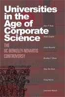

<body bgcolor="#FFFFFF" text="#000000" link="#0000FF" vlink="#CC0000" alink="#CC0000"><center><hr width="350" size="1" align="center" noshade>Asks the hard questions about partnerships between big business and American universities<hr width="350" size="1" align="center" noshade><p><a href="https://cdcshoppingcart.uchicago.edu/Cart/ChicagoBook.aspx?ISBN=9781592135332&&PRESS=temple" target="_top">Buy this book!</a> | <a href="https://cdcshoppingcart.uchicago.edu/Cart/Cart.aspx?PRESS=temple" target="_top">View Cart</a> | <a href="https://cdcshoppingcart.uchicago.edu/Cart/Cart.aspx?PRESS=temple" target="_top">Check Out</a></p><p></p></center><!--none//--><h1>Universities in the Age of Corporate Science</h1>
<H2>The UC Berkeley-Novartis Controversy</H2>
<h3>Alan P. Rudy, Dawn Coppin, Jason Konefal, Bradley T. Shaw, Toby Ten Eyck, Craig Harris and Lawrence Busch</h3>
<P>cloth 1-59213-533-1 $65.50, Jan 07, <FONT COLOR=#990033>Available</FONT>
<br>Electronic Book 1-59213-535-8 $65.50 <FONT COLOR=#990033>Available</FONT>
<BR> 256 pp
6x9
7&nbsp;tables 4&nbsp;figures
</P><BLOCKQUOTE><I>"A landmark study of the continuing corporatization of higher education. It is unique: no other work has its depth and thoroughness regarding one particular (and particularly important) university-industry relationship."</i>
<br>&#151;<b>Christopher Newfield</b>, author of <i>Ivy and Industry: Business and the Making of the American University, 1880-1980</i><i></I></BLOCKQUOTE>
<p>As a result of widespread financial pressures, U.S. research universities increasingly stress the pursuit of funding beyond that available from government grants and contracts. Concomitantly, recent legal changes have encouraged universities to develop closer ties to the private business sector.
<p>This book represents the most thorough review ever undertaken of a major collaboration between industry and academe. A professional evaluation team obtained authorization for unprecedented access to those associated with the landmark $25 million contract entered into by the Plant and Microbial Biology Department at the University of California, Berkeley, and the Novartis Agricultural Discovery Institute, a subsidiary of Novartis, an international pharmaceutical and agribusiness conglomerate.
<p>This model study presents the inside story of the partnership itself, places it in the context of contemporary university-industry relationships, and provides a larger theoretical framework for evaluating such collaborations in the future.
<BR>&nbsp;<h2>Reviews</h2>
<p><I>"The book provides fascinating details of the deal, the players and the controversy, and does an admirable job of empirically and qualitatively measuring the effects of the agreement on scientific research. It succeeds in its aim of analyzing the UCB-N deal...In short, </i>Universities in the Age of Corporate Science<i> is a compelling and detailed description of the events surrounding the UCB-N deal. It should be enjoyed by all those who follow the evolution of university-industry relations, offering as it does a unique look at how the collaboration was made." </I><br>&#151<b><I>Nature</I></b>
<p><I>"The [book] does deliver on its promote of a thorough review of how the UCB-Novartis agreement emerged, justifications for moving it forward, and its ultimate impact."
</I><br>&#151<b><I>National Council of University Research Administrators (NCURA) Newsletter</I></b>
<p><I>"[T]he book explores the uproar surrounding the Berkeley-Novartis agreement....Although no misconduct was uncovered by the study, the deal’s scrutiny calls for a multilevel and ongoing dialogue on the future of land grant and research universities, the authors note."</I><br>&#151<b><I>University Business</I></b>
<p><I>"</i>Universities in the Age of Corporate Science<i> would be of interest to students and faculty in a variety of disciplines and degree levels. Agricultural science students and faculty should be most encouraged to read this study, as it contains much information on where these fields have been and in what directions the research is going. This would also be good reading for those in the social sciences studying the conflicts that arise from the interaction of private interests and public good."
</I><br>&#151<b><I>Agriculture and Human Values</I></b>
<BR>&nbsp;<h2>Contents</h2><P>
<p>Acknowledgements
<br>Glossary of Acronyms
<br>Introduction
<br>1. Theoretical Framework
<br>2. The Changing World of Universities
<br>3. Land Grant Universities, Agricultural Science and UC Berkeley
<br>4. A Chronology of Events
<br>5. Points of Contention
<br>6. Overview and Analysis of the Agreement
<br>7. The Agreement and the Public Stage
<br>8. The Scientific Enterprise
<br>9. Intellectual Property Rights
<br>10. Impact and significance of UCB-N on UCB and CNR
<br>11. Rethinking the Role of Public and Land Grant Universities
<br>12. Constructing the Future: Revisioning Universities
<br>References
</P><BR>&nbsp;<H2>About the Author(s)</H2>
<P><b>Alan P. Rudy</b> teaches in the Department of Sociology, Anthropology and Social Work at Central Michigan University</P>
<P><b>Dawn Coppin</b> is the Executive Director of the Homeless Garden Project.</P>
<P><b>Jason Konefal</b> is a Doctoral Candidate, Department of Sociology, Michigan State University.</P>
<P><b>Bradley T. Shaw</b> is Licensing and Marketing Manager in the Office of Intellectual Property at Michigan State University.</P>
<P><b>Toby Ten Eyck</b> is Associate Professor, Department of Sociology and the National Food Safety and Toxicology Center, Michigan State University.</P>
<P><b>Craig Harris</b> is Associate Professor in the Department of Sociology and the Food Safety Policy Center at Michigan State University.</P>
<P><b>Lawrence Busch</b> is Director, Institute for Food and Agricultural Standards and University Distinguished Professor, Michigan State University.</P>
<BR><H2>Subject Categories</H2>
<p><A HREF="/tempress/education.html" TARGET="_top">Education</a>
<BR><A HREF="/tempress/science.html" TARGET="_top">Science</a>
<BR><A HREF="/tempress/sociology.html" TARGET="_top">Sociology</a>
</p>
<p align="center"><a href="https://cdcshoppingcart.uchicago.edu/Cart/ChicagoBook.aspx?ISBN=9781592135332&&PRESS=temple" target="_top">Buy this book!</a> | <a href="https://cdcshoppingcart.uchicago.edu/Cart/Cart.aspx?PRESS=temple" target="_top">View Cart</a> | <a href="https://cdcshoppingcart.uchicago.edu/Cart/Cart.aspx?PRESS=temple" target="_top">Check Out</a></p><p><font face="Arial" size="1"><a href="copyright.html" onMouseOver="window.status='Web Copyright Policy';return true;" onMouseOut="window.status=''" title="Web Copyright Policy">&copy;</a> 2015 <a href="http://www.temple.edu" target="new" onMouseOver="window.status='Link to Temple University home page';return true;" onMouseOut="window.status=''" title="Link to Temple University home page">Temple University</a>. All Rights Reserved. http://www.temple.edu/tempress/titles/1867_reg.html</font></p>